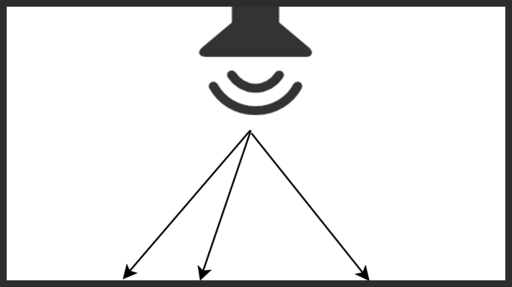
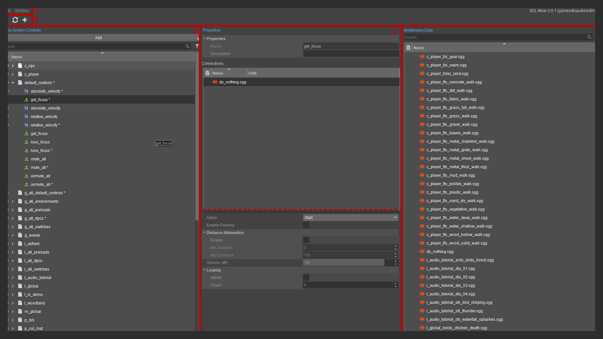
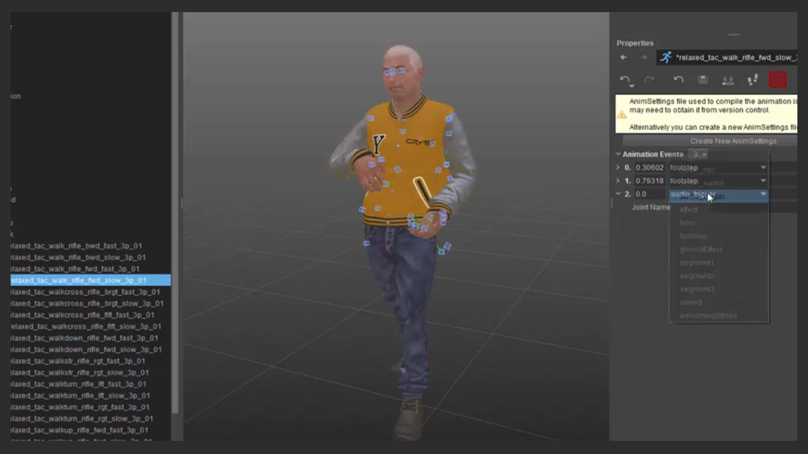

Audio Overview
This section is laid out on the basis of understanding a scenario and how to execute the audio interface from that scenario. You will learn how to interface from the characters and physics alike or possibly you will need to introduce a musical score down the line. All of this can be encapsulated within this section to get you up and running with the audio implementation inside of CRYENGINE.

Pic: RENAME
Audio Reference
The audio system will next into numerous tools but at its core the system will always draw almost all the functionality from the Audio Controls Editor. It is important to understand the different types of triggers and controls in order to properly add and nest audio into your scenes.

Pic: Audio Controls Editor
Audio Video Tutorials
Within the tutorials for the audio interface you will find that you have access to almost every system within CRYENGINE to expose audio and events. The tutorials cover everything from triggering a sound from a location to nest footstep sounds in your character when walking around.

Pic: Footstep creation